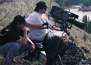
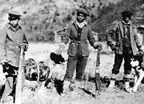
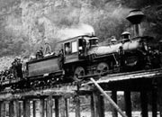
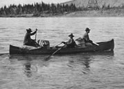
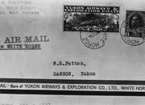
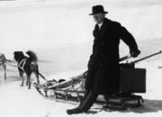
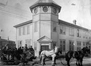
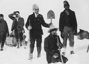

Au début, les nouveaux arrivants comme les Premières nations se servaient des rivières et des lacs pour leurs déplacements en été, et en hiver, de voies terrestres, à pied ou en traîneau à chiens. Toutefois, les transports au Yukon ont connu des changements de taille.
Au début du XXe siècle, les bateaux à aubes empruntaient les cours d’eau où jadis seulement les embarcations recouvertes de peaux, les radeaux, les embarcations à perches et les canots naviguaient. La construction de la voie ferrée de la White Pass assurait un lien mécanisé à l’année entre la côte et les terres intérieures. Whitehorse se trouvait à la tête de la voie de navigation. L’établissement d’une ligne télégraphique jusqu’à la côte et l’avènement du téléphone ont également amélioré les communications.
Dès 1902, une route d’hiver reliait Dawson à Whitehorse. Des diligences tirées par les chevaux transportaient passagers, marchandise et courrier. Durant près de 20 ans, le transport par diligence constituait un lien essentiel, mais dès les années 1930, il a été remplacé par le transport aérien. Le corridor panterritorial créé par la construction de la route de l’Alaska le long d’anciennes pistes des Premières nations et de routes désaffectées a permis de relier le territoire au reste du continent. Dans les années 1950, on a construit une route de Whitehorse à Dawson, mettant fin à l’époque des bateaux à aubes.
Les nouveaux modes de transport ont également apporté d’autres changements. Les limites causées par l’éloignement et les grandes distances au Yukon ont graduellement diminué à mesure qu’on a amélioré les transports et les communications. Les inventions modernes, comme le télécopieur, le courrier électronique et les satellites ont raccourci encore les distances.
«…d’après mes calculs, j’ai parcouru sur cette piste au cours des 20 dernières années la distance entre la Terre et la lune.»
Conducteur de la piste terrestre, Simon Fiendel
Dawson Daily News, le 5 mai 1920
Passer au tableau Où nous habitionsTransports et communications
(Ci-dessus) Les habitants de Dawson se réunissent pour accueillir le Sarah, un des bateaux qui naviguaient sur le cours inférieur du fleuve Yukon.
AY, collection Kingscote, 84/32 nº 27

Membres de l’équipe de tournage de Nedaa, Rob Smith
et Randy Mackenzie, sur le terrain. La
Northern Native Broadcasting Yukon a été
formée pour assurer le développement de la culture
des Premières nations et préparer des programmes de
télévision.
Nedaa
Trois hommes kaska avec des chiens de trait, région de la rivière Pelly (circa 1923).
AY, collection Tidd nº 7532
Un train de la White Pass traversant la rivière Skagway, le 21 juillet 1898. La voie ferrée passe par le col White et suit une piste jusqu’aux terres intérieures.
AY, collection Beatty, 82/390 nº 140
Un canot à Yukon Crossing où la piste terrestre croise le fleuve Yukon (sans date). Notez en arrière-plan la tour pour le transbordeur à câbles. On se servait des bateaux à aubes en été et des canots au printemps et à l’automne.
AY, collection Back, 90/19 nº 165
Une enveloppe de lettre par avion (vers 1920). Les entreprises aériennes vendaient leurs propres timbres pour la surtaxe. Notez que l’envoi d’une lettre par courrier ordinaire demandait un timbre de 2 cents, tandis qu’une lettre par avion coûtait 25 cents de plus.
AY, collection Clyde Wann, 82/562 nº 29
Évêque Geddes et traîneau à chiens, région de la rivière Stewart (années 30).
AY, collection Tidd nº 7371
Diligence effectuant le trajet Whitehorse-Dawson devant le bureau de poste de Dawson (sans date). Notez la pile de bois de corde à l’arrière-plan. Le contrat pour le courrier était une composante vitale du transport ferroviaire et maritime.
AY, collection Scott/Phelps, 89/31 nº 53
Chercheurs d’or et porteurs se reposent au sommet du col Chilkoot (vers 1897). Les chercheurs d’or engageaient des Autochtones car ils avaient de l’expérience de portage et connaissaient bien la route.
AY, collection Winter et Pond nº 2298